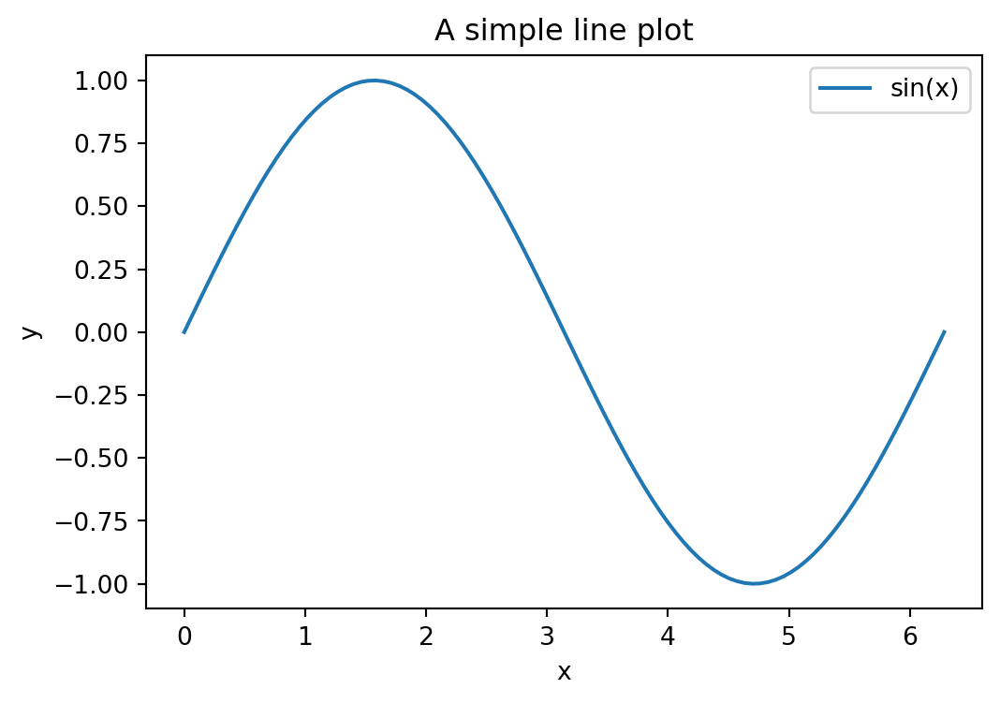
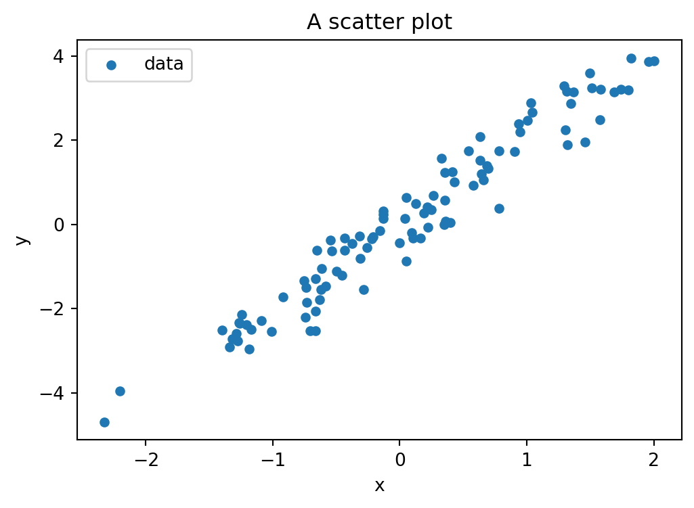
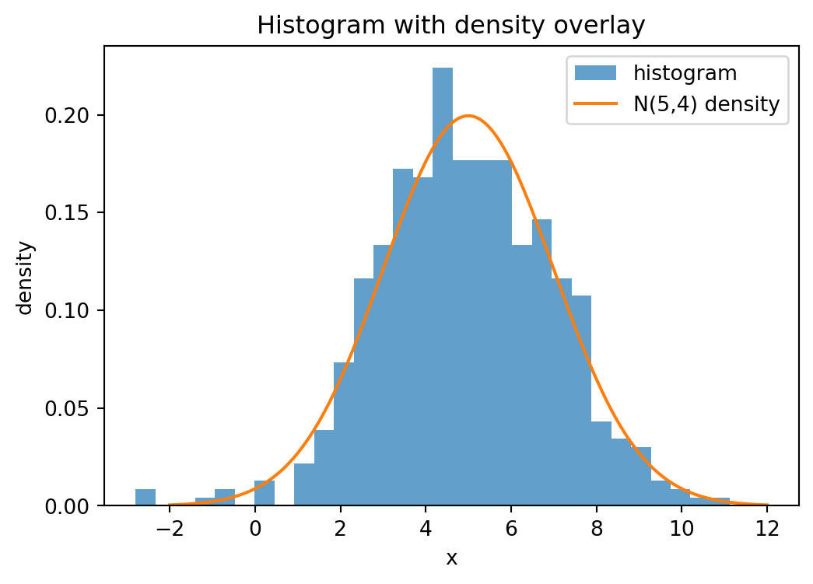
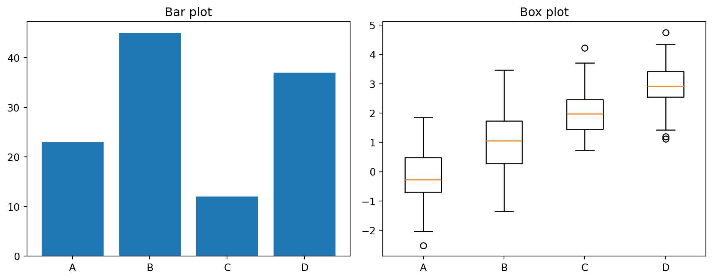
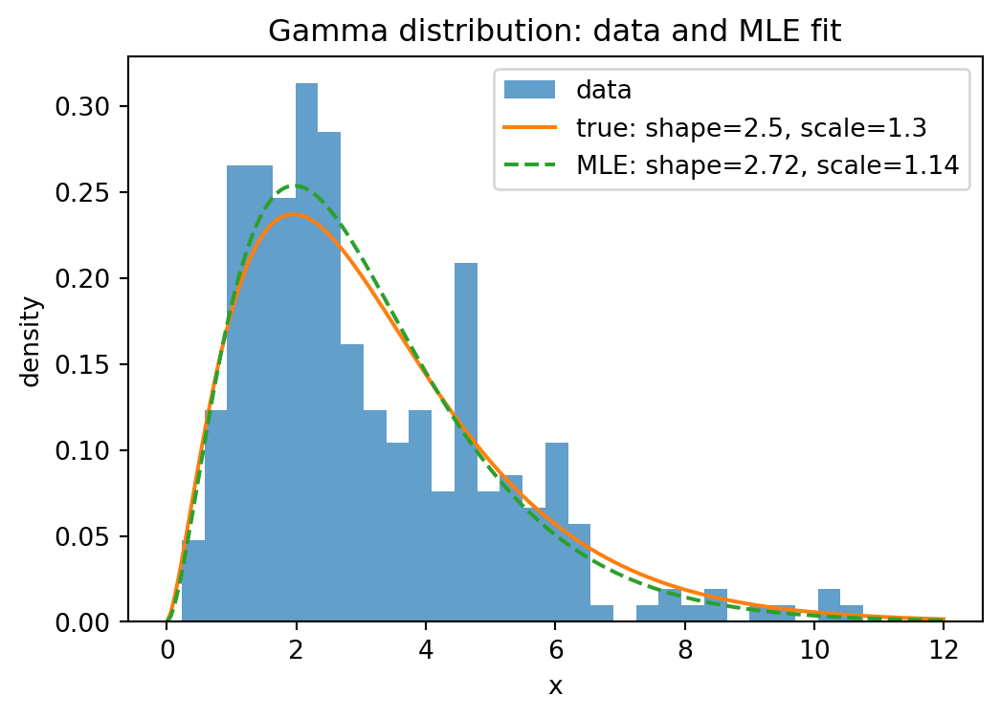
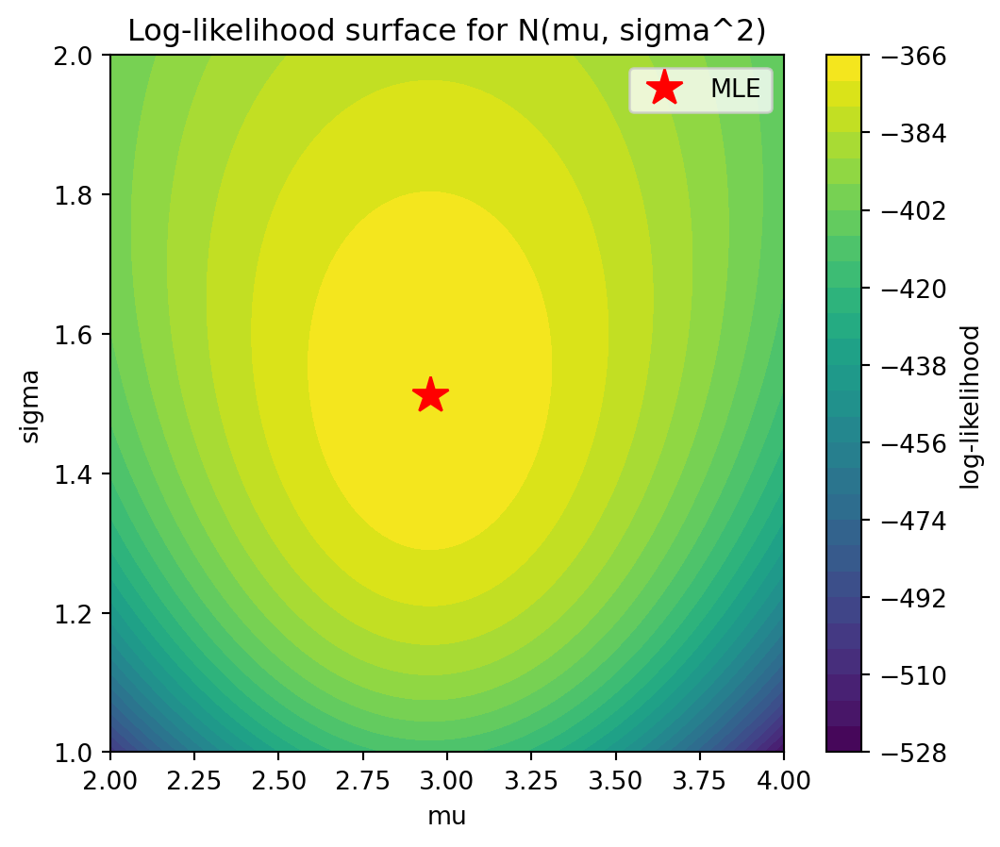

import numpy as np
import matplotlib.pyplot as plt
from scipy import stats8 Analyzing data
In this chapter, we learn about visualization with matplotlib and statistical analysis with scipy.stats, including maximum likelihood estimation.
8.1 Visualization (matplotlib)
The standard plotting library in Python is matplotlib. Its pyplot module provides a MATLAB-like interface. Here, plt refers to matplotlib.pyplot.
plt.figure(figsize=(w, h)): create a new figure with given size in inches.plt.plot(x, y, label=...): line plot.plt.scatter(x, y, s=..., label=...): scatter plot (sis marker size).plt.hist(data, bins=..., density=...): histogram.plt.bar(categories, values): bar plot.plt.boxplot(data_list): box plot.plt.xlabel(...),plt.ylabel(...),plt.title(...): axis labels and title.plt.legend(): show legend.plt.show(): display the figure.fig, axes = plt.subplots(nrows, ncols): create a figure with multiple subplots.
x = np.linspace(0, 2 * np.pi, 100)
y = np.sin(x)
plt.figure(figsize=(6, 4))
plt.plot(x, y, label="sin(x)")
plt.xlabel("x")
plt.ylabel("y")
plt.title("A simple line plot")
plt.legend()
plt.show()
rng = np.random.default_rng(0)
x = rng.normal(size=100)
y = 2 * x + 0.5 * rng.normal(size=100)
plt.figure(figsize=(6, 4))
plt.scatter(x, y, s=20, label="data")
plt.xlabel("x")
plt.ylabel("y")
plt.title("A scatter plot")
plt.legend()
plt.show()
# histogram with density overlay
data = rng.normal(loc=5, scale=2, size=500)
x_grid = np.linspace(-2, 12, 200)
plt.figure(figsize=(6, 4))
plt.hist(data, bins=30, density=True, alpha=0.7, label="histogram")
plt.plot(x_grid, stats.norm.pdf(x_grid, loc=5, scale=2), label="N(5,4) density")
plt.xlabel("x")
plt.ylabel("density")
plt.title("Histogram with density overlay")
plt.legend()
plt.show()
# subplots
fig, axes = plt.subplots(1, 2, figsize=(10, 4))
axes[0].plot(np.linspace(0, 1, 50), np.linspace(0, 1, 50)**2)
axes[0].set_title("y = x^2")
axes[1].plot(np.linspace(0, 1, 50), np.sqrt(np.linspace(0, 1, 50)))
axes[1].set_title("y = sqrt(x)")
plt.tight_layout()
plt.show()
# bar plot and box plot
categories = ["A", "B", "C", "D"]
values = [23, 45, 12, 37]
fig, axes = plt.subplots(1, 2, figsize=(10, 4))
axes[0].bar(categories, values)
axes[0].set_title("Bar plot")
data_groups = [rng.normal(loc=m, size=50) for m in [0, 1, 2, 3]]
axes[1].boxplot(data_groups, labels=categories)
axes[1].set_title("Box plot")
plt.tight_layout()
plt.show()/tmp/ipykernel_4616/117098709.py:11: MatplotlibDeprecationWarning: The 'labels' parameter of boxplot() has been renamed 'tick_labels' since Matplotlib 3.9; support for the old name will be dropped in 3.11.
axes[1].boxplot(data_groups, labels=categories)
8.2 Descriptive statistics (scipy.stats)
The scipy.stats module provides functions for descriptive statistics and statistical tests. Here, data is a 1d array or list.
stats.describe(data): returns count, min, max, mean, variance, skewness, kurtosis.stats.tmean(data): trimmed mean.stats.tstd(data): trimmed standard deviation.stats.tvar(data): trimmed variance.stats.pearsonr(x, y): Pearson correlation coefficient and p-value.stats.spearmanr(x, y): Spearman rank correlation and p-value.
data = [1, 2, 3, 4, 5, 6, 7, 8]
result = stats.describe(data)
print(result)DescribeResult(nobs=np.int64(8), minmax=(np.int64(1), np.int64(8)), mean=np.float64(4.5), variance=np.float64(6.0), skewness=np.float64(0.0), kurtosis=np.float64(-1.2380952380952381))data = np.array([2.3, 4.1, 3.7, 5.2, 4.8, 3.3])
print("trimmed mean =", stats.tmean(data))
print("std =", stats.tstd(data))
print("median =", np.median(data))trimmed mean = 3.9000000000000004
std = 1.0488088481701514
median = 3.9# correlation
rng = np.random.default_rng(0)
x = rng.normal(size=50)
y = 2 * x + 0.5 * rng.normal(size=50)
r, p_value = stats.pearsonr(x, y)
print(f"Pearson r = {r:.4f}, p-value = {p_value:.6f}")Pearson r = 0.9621, p-value = 0.0000008.3 Probability distributions (scipy.stats)
scipy.stats provides a large number of probability distributions. Each distribution object has a common interface. Here, dist is a distribution object (e.g. stats.norm, stats.expon, stats.poisson).
dist.rvs(size=n): drawnrandom samples.dist.pdf(x)/dist.pmf(x): density / probability mass function.dist.cdf(x): cumulative distribution function.dist.ppf(q): quantile function (inverse ofcdf).dist.mean(),dist.var(),dist.std(): theoretical moments.dist.fit(data): estimate parameters from data (maximum likelihood).
For continuous distributions, the location-scale convention is used: stats.norm(loc=mu, scale=sigma) gives \(\mathcal{N}(\mu, \sigma^2)\).
# standard normal
print("mean =", stats.norm.mean())
print("pdf(0) =", stats.norm.pdf(0))
print("cdf(1.96) =", stats.norm.cdf(1.96))
print("ppf(0.975) =", stats.norm.ppf(0.975))mean = 0.0
pdf(0) = 0.3989422804014327
cdf(1.96) = 0.9750021048517795
ppf(0.975) = 1.959963984540054# normal with given parameters
dist = stats.norm(loc=3, scale=2)
samples = dist.rvs(size=5, random_state=42)
print("samples:", samples)
print("mean =", dist.mean())
print("variance =", dist.var())samples: [3.99342831 2.7234714 4.29537708 6.04605971 2.53169325]
mean = 3.0
variance = 4.0# exponential
print("Exp(1) mean =", stats.expon.mean())
print("Exp(1) samples:", stats.expon.rvs(size=5, random_state=0))Exp(1) mean = 1.0
Exp(1) samples: [0.79587451 1.25593076 0.92322315 0.78720115 0.55104849]# Poisson
print("Poisson(3) pmf(2) =", stats.poisson.pmf(2, mu=3))Poisson(3) pmf(2) = 0.22404180765538775# binomial
print("Binom(10, 0.3) pmf(3) =", stats.binom.pmf(3, n=10, p=0.3))
print("Binom(10, 0.3) mean =", stats.binom.mean(n=10, p=0.3))Binom(10, 0.3) pmf(3) = 0.2668279319999998
Binom(10, 0.3) mean = 3.0# visualizing distributions
fig, axes = plt.subplots(1, 3, figsize=(14, 4))
x = np.linspace(-4, 4, 200)
axes[0].plot(x, stats.norm.pdf(x), label="N(0,1)")
axes[0].plot(x, stats.norm.pdf(x, loc=1, scale=0.5), label="N(1,0.25)")
axes[0].set_title("Normal distributions")
axes[0].legend()
x = np.linspace(0, 5, 200)
for lam in [0.5, 1.0, 2.0]:
axes[1].plot(x, stats.expon.pdf(x, scale=1/lam), label=f"lambda={lam}")
axes[1].set_title("Exponential distributions")
axes[1].legend()
k = np.arange(0, 15)
for mu in [1, 3, 7]:
axes[2].bar(k + 0.2*(mu-3)/4, stats.poisson.pmf(k, mu=mu), width=0.2, label=f"mu={mu}")
axes[2].set_title("Poisson distributions")
axes[2].legend()
plt.tight_layout()
plt.show()
8.4 Statistical tests
scipy.stats provides many standard statistical tests. Each test returns a test statistic and a p-value.
stats.ttest_1samp(data, popmean): one-sample t-test (is the mean equal topopmean?).stats.ttest_ind(sample1, sample2): two-sample t-test (do two independent samples have the same mean?).stats.chisquare(observed): chi-squared test (do observed frequencies match expected frequencies?).stats.kstest(data, 'norm'): Kolmogorov-Smirnov test (does the data come from the given distribution?).
rng = np.random.default_rng(0)
data = rng.normal(loc=5.2, scale=1.0, size=30)
# one-sample t-test
t_stat, p_value = stats.ttest_1samp(data, popmean=5.0)
print(f"t-statistic = {t_stat:.4f}, p-value = {p_value:.4f}")t-statistic = 0.5225, p-value = 0.6053# two-sample t-test
sample1 = rng.normal(loc=5.0, scale=1.0, size=40)
sample2 = rng.normal(loc=5.5, scale=1.0, size=40)
t_stat, p_value = stats.ttest_ind(sample1, sample2)
print(f"t-statistic = {t_stat:.4f}, p-value = {p_value:.4f}")t-statistic = -1.2000, p-value = 0.2338# chi-squared test
observed = np.array([18, 22, 20, 25, 15])
stat, p_value = stats.chisquare(observed)
print(f"chi2-statistic = {stat:.4f}, p-value = {p_value:.4f}")chi2-statistic = 2.9000, p-value = 0.5747# Kolmogorov-Smirnov test
data = rng.normal(loc=0, scale=1, size=100)
stat, p_value = stats.kstest(data, 'norm')
print(f"KS statistic = {stat:.4f}, p-value = {p_value:.4f}")KS statistic = 0.0477, p-value = 0.96898.5 Maximum likelihood estimation
Maximum likelihood estimation (MLE) is one of the most important methods in statistics. Given i.i.d. observations \(x_1, \dots, x_n\) from a distribution with density \(f(x; \theta)\), the likelihood function is \[L(\theta) = \prod_{i=1}^n f(x_i; \theta),\] and the log-likelihood is \[\ell(\theta) = \sum_{i=1}^n \log f(x_i; \theta).\] The MLE is the parameter value that maximizes \(\ell(\theta)\), or equivalently minimizes \(-\ell(\theta)\).
In scipy.stats, the fit method computes the MLE for any distribution:
dist.fit(data): returns the MLE of the distribution parameters.dist.logpdf(x, ...): log-density, useful for computing the log-likelihood.
For cases where no closed-form MLE exists, we use numerical optimization via scipy.optimize.minimize (see Section 6.9).
# MLE for the normal distribution
rng = np.random.default_rng(0)
true_mu = 3.0
true_sigma = 1.5
data = rng.normal(loc=true_mu, scale=true_sigma, size=200)
# analytical MLE
mu_hat = np.mean(data)
sigma_hat = np.std(data) # np.std uses 1/n, which is the MLE
print(f"true mu = {true_mu}, MLE mu = {mu_hat:.4f}")
print(f"true sigma = {true_sigma}, MLE sigma = {sigma_hat:.4f}")true mu = 3.0, MLE mu = 3.0229
true sigma = 1.5, MLE sigma = 1.4418# using scipy's fit method
mu_fit, sigma_fit = stats.norm.fit(data)
print(f"scipy fit: mu = {mu_fit:.4f}, sigma = {sigma_fit:.4f}")scipy fit: mu = 3.0229, sigma = 1.4418# MLE for the exponential distribution
# For Exp(lambda) with density lambda * exp(-lambda * x), the MLE is lambda_hat = 1 / x_bar
true_lambda = 2.0
data_exp = rng.exponential(scale=1/true_lambda, size=150)
lambda_hat = 1 / np.mean(data_exp)
print(f"true lambda = {true_lambda}, MLE lambda = {lambda_hat:.4f}")true lambda = 2.0, MLE lambda = 1.7986# MLE via numerical optimization (when no closed form exists)
# Example: Gamma distribution
from scipy import optimize
true_shape = 2.5
true_scale = 1.3
data_gamma = rng.gamma(shape=true_shape, scale=true_scale, size=300)
def neg_log_likelihood_gamma(params):
a, scale = params
if a <= 0 or scale <= 0:
return np.inf
return -np.sum(stats.gamma.logpdf(data_gamma, a=a, scale=scale))
result = optimize.minimize(neg_log_likelihood_gamma, x0=[1.0, 1.0], method='Nelder-Mead')
a_hat, scale_hat = result.x
print(f"true shape = {true_shape}, MLE shape = {a_hat:.4f}")
print(f"true scale = {true_scale}, MLE scale = {scale_hat:.4f}")true shape = 2.5, MLE shape = 2.7228
true scale = 1.3, MLE scale = 1.1411# compare with scipy's built-in fit
a_fit, loc_fit, scale_fit = stats.gamma.fit(data_gamma, floc=0)
print(f"scipy fit: shape = {a_fit:.4f}, scale = {scale_fit:.4f}")scipy fit: shape = 2.7227, scale = 1.1411# visualizing the MLE fit
x_grid = np.linspace(0, 12, 200)
plt.figure(figsize=(6, 4))
plt.hist(data_gamma, bins=30, density=True, alpha=0.7, label="data")
plt.plot(x_grid, stats.gamma.pdf(x_grid, a=true_shape, scale=true_scale),
label=f"true: shape={true_shape}, scale={true_scale}")
plt.plot(x_grid, stats.gamma.pdf(x_grid, a=a_hat, scale=scale_hat),
label=f"MLE: shape={a_hat:.2f}, scale={scale_hat:.2f}", linestyle="--")
plt.xlabel("x")
plt.ylabel("density")
plt.title("Gamma distribution: data and MLE fit")
plt.legend()
plt.show()
# log-likelihood surface for N(mu, sigma^2)
data = rng.normal(loc=3.0, scale=1.5, size=200)
mu_grid = np.linspace(2.0, 4.0, 100)
sigma_grid = np.linspace(1.0, 2.0, 100)
MU, SIGMA = np.meshgrid(mu_grid, sigma_grid)
log_lik = np.zeros_like(MU)
for i in range(len(sigma_grid)):
for j in range(len(mu_grid)):
log_lik[i, j] = np.sum(stats.norm.logpdf(data, loc=MU[i, j], scale=SIGMA[i, j]))
plt.figure(figsize=(6, 5))
plt.contourf(MU, SIGMA, log_lik, levels=30, cmap="viridis")
plt.colorbar(label="log-likelihood")
plt.xlabel("mu")
plt.ylabel("sigma")
plt.title("Log-likelihood surface for N(mu, sigma^2)")
mu_mle = np.mean(data)
sigma_mle = np.std(data)
plt.plot(mu_mle, sigma_mle, "r*", markersize=15, label="MLE")
plt.legend()
plt.show()
Plotting the log-likelihood surface helps build geometric intuition: the MLE is the peak of the surface. For well-behaved models, the surface is concave near the maximum, and the curvature encodes the precision of the estimate (related to the Fisher information).